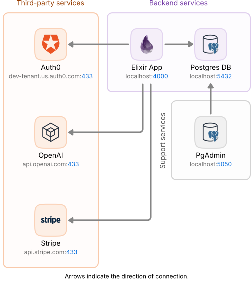

View Source Dockerized Elixir Workbench


This is a script for creating Elixir projects with the Phoenix framework and deploying them on localhost using a specific service architecture with Docker containers. It eliminates the need to install anything other than Docker Desktop to create, develop, and deploy the project in either a development or production environment.
Arquitecture

| Service | URL | Description |
|---|---|---|
| Elixir App | http://localhost:4000 | API-REST, GraphiQL and/or Web server |
| Postgres DB | http://localhost:5432 | Relational database server |
| pgAdmin | http://localhost:5050 | Database management tool |
| Auth0 | https://dev-tenant.us.auth0.com:433 | Identity management platform |
| Open AI | https://api.openai.com/v1:433 | AI Assistant service |
| Stripe | https://api.stripe.com:433 | Payment service provider |
Configuration
Give execution permissions to
appfile (This step only needs to be performed once):sudo chmod +x appFor complete configuration instruccions consult: Configuration File
Modify the
config.conffile in order to configure the project name and creation specifications.Make sure Docker Desktop is running before running any script command.
Create a new project
Run the following command:
./app newThis command generates schemas, changesets, context functions, tests, and migration files when applicable and apply specific configurations.
It can accept all option flags from the task
mix phx.newlike--no-htmlor--no-ecto(Full task phx.new documentation).
Deployment
This step is only required when deploying the service for the first time, a database reset is needed or the database container is detroyed. This command drops the project database (if any), creates a new one and run a seeding script:
./app setup [-e, --env ENV]Once having a configured database, run the following command to deploy the service along with its configured required services and tools.
./app up [-e, --env ENV]
In both commands the flag [-e, --env ENV] is optional. The argument ENV can be dev, prod or other, it corresponds to the desired enviroment configuration to be deployed, by default is dev.
Custom entrypoint
There is the possibility of deploying the application by executing custom server initialization commands:
./app run [ARGS...]
Replace [ARGS...] with the command(s) to be executed. For example, to run an elixir interactive console:
./app run iex -S mix phx.server
Delete project
Use this command for deleting all project files and the Docker compose project:
./app delete
⚠️ Warning: This action is destructive. Once executed, the current project files will be deleted, and neither the files nor the docker containers can be recovered. Before proceeding, make sure you are absolutely certain that you want to remove them.
Maintenance
Private Github Registry Images
In order to download private github registry images, you need to login to GitHub using a username and a token (classic, not fine-grained) and have the rquired access level to the resource. To do this, execute the following command:
./app login [GITHUB_USER] [ACCESS_TOKEN]
Replace [GITHUB_USER] and [ACCESS_TOKEN] with your corresponding user name and token. How to generate a token: Personal Access Token (classic)
Demo
This command runs the new, setup, up, and delete commands consecutively for demonstration purposes:
./app demo [-e, --env ENV]
The flag [-e, --env ENV] is optional. The argument ENV can be dev, prod or other, it corresponds to the desired enviroment configuration to be deployed, by default is dev.
⚠️ Warning: This action is destructive. Once executed, the current project files (if any) will be deleted, new ones will be created and finally deleted again and cannot be recovered. Before proceeding, make sure is safe to remove them if there is any.
Reset Docker
Use this command in order to stop all containers and prune Docker. It's like a Docker data brute-force reset:
./app prune
⚠️ Warning: This action is destructive. Once executed, all Docker resources (not just the project's resources, but ALL resources in Docker) images, containers, volumes, networks, cache, etc.) will no longer exist and cannot be recovered, only rebuilt. Before proceeding, make sure you are absolutely certain that you want to remove them.
Remove workbench
Removes the workbench script along with all its files and configurations from the generated project, leaving no trace, as if it had never been there.
./app remove-workbench
🛑 Critical Action: This operation is irreversible! Once executed, the workbench script files and configurations will be permanently deleted and cannot be recovered. Before proceeding, please ensure you are absolutely certain about this action and proceed with extreme caution.
Help
Shows the workbech script help section:
./app help
License
This software is released under the MIT license.
Permission is granted to use, copy, modify, and distribute the code in both commercial and non-commercial projects. It only requires that the copyright notice and permission statement be maintained in all copies. No warranties are provided and the authors bear no liability.
Copyright © 2024 José Luis Pamplona Stoever.